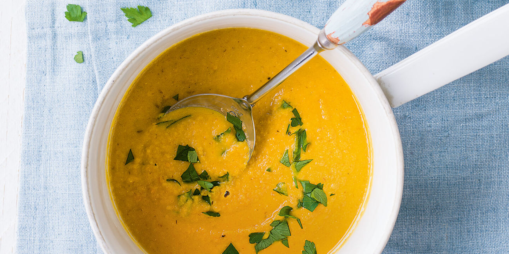

Carrot & Lentil Soup

Description
A delicious, spicy blend packed full of iron and low in fat to boot.
It's ready in under half an hour, or can be made in a slow cooker.
Ingredients
- 2 tsp olive oil
- 2 spring onions, chopped
- 1 clove garlic, crushed
- 1/2 tsp cumin seeds
- 250g carrots, grated
- 75g dried red split lentils
- hot vegetable stock, made with 1 stock cube
- Zest and juice of 1/2 lemon
- Handful flat leaf parsley, chopped
Steps
- Heat the oil in a large pan over a low heat and add the spring onion, garlic and cumin seeds
- Fry for 2-3 mins, until soft and fragrant
- Add the carrot and cook for 5 mins, until slightly softened
- Add the lentils and pour over the hot stock
- Bring to the boil, then simmer for 20 mins, until the lentils are soft
- Blend or mash the soup and season well
- Stir through the lemon zest and juice, scatter over the parsley, and serve sprinkled with some freshly ground black pepper